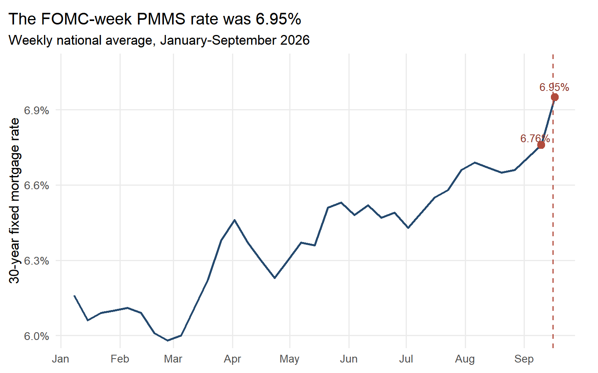
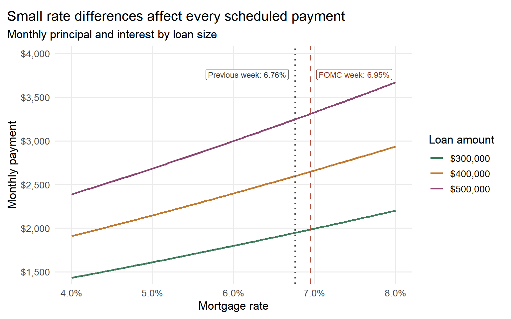

Homebuying Power Around the September FOMC Meeting
web scraping
monetary policy
housing
mortgage rates
R
A reproducible web-scraping analysis of mortgage rates and household buying power around the September 2026 FOMC meeting.
Author
Scarlett
Published
September 21, 2026
On September 16, 2026, the Federal Open Market Committee (FOMC) raised its federal-funds target range by 25 basis points to 3.75%–4.00%. Short-term benchmark rates adjusted immediately, but homebuyers do not borrow overnight: they usually finance a purchase for 15 or 30 years. This post asks a practical question:
How did mortgage financing conditions differ between the week before and the week of the September meeting, and what would that difference imply for homebuying power?
The answer matters because buyers often shop by listing price when the binding constraint is actually monthly cash flow. I combine scraped policy, mortgage, and housing-market information with standard mortgage mathematics to translate an observed weekly rate difference into household-level dollar amounts.
Research Design
The analysis follows a transparent pipeline:
Collect: scrape four public webpages with rvest and cache one dated HTML copy of each page.
Clean: convert table headings into dates, percentage strings into decimals, and price text into a numeric dollar value.
Validate: require the policy and mortgage observations used in the comparison to be present and nonmissing.
Calculate: apply the fixed-rate mortgage annuity formula under explicit assumptions.
Decide: convert the estimates into budget and stress-testing recommendations for prospective buyers.
Sources and ethical access
Source
Scraped information
Role in the analysis
Federal Reserve FOMC statement
Announced target range
Confirms the policy event
Federal Reserve H.15 table
Effective federal-funds and bank prime rates
Documents daily short-rate adjustment
Freddie Mac PMMS archive
Weekly 30- and 15-year mortgage rates
Measures household financing conditions
Census New Residential Sales
July 2026 median new-home sales price
Defines a nationally scaled illustrative scenario
All four pages are public and require no login, CAPTCHA, paywall, or access workaround. The script makes at most one request per source when a cached file is absent, waits before requesting, identifies the academic user agent, and reuses local HTML thereafter. This both limits server load and fixes the source vintage for reproducibility.
Freddie Mac’s September 17 PMMS observation is not a clean post-announcement mortgage rate. The weekly survey summarizes applications received largely from the preceding Thursday through Wednesday, so this observation covers approximately September 10–16, while the FOMC announcement occurred at 2:00 p.m. on September 16. I therefore call it the FOMC-week PMMS rate, not the “after” rate. The comparison below is descriptive and does not identify the causal effect of the announcement.
Data collection, cleaning, and validation
Show the reproducible R code
# FOMC statement ---------------------------------------------------------fomc_page <-read_cached_page("https://www.federalreserve.gov/newsevents/pressreleases/monetary20260916a.htm","fomc_2026-09-16.html")fomc_text <- fomc_page |>html_elements("#article p") |>html_text2() |>str_squish() |>str_c(collapse =" ")if (!str_detect(fomc_text, "3-3/4 to 4 percent")) {stop("The expected target range was not found in the FOMC statement.")}# Federal Reserve H.15 --------------------------------------------------h15_page <-read_cached_page("https://www.federalreserve.gov/releases/h15/","h15_2026-09-21.html")h15 <- h15_page |>html_element("table") |>html_table(fill =TRUE) |>clean_names()h15_long <- h15 |>pivot_longer(-instruments,names_to ="date_label",values_to ="rate_text" ) |>mutate(date_text = date_label |>str_remove("^x") |>str_replace_all("_", " "),date =parse_date_time( date_text,orders ="Y b d",locale ="C",quiet =TRUE ) |>as_date(),rate =parse_number(as.character(rate_text)) /100 )policy_snapshot <- h15_long |>filter( date %in%ymd(c("2026-09-16", "2026-09-17")),str_detect( instruments,"Federal funds \\(effective\\)|Bank prime loan" ) ) |>mutate(series =if_else(str_detect(instruments, "Federal funds"),"Effective federal funds rate","Bank prime rate" ) ) |>select(date, series, rate) |>arrange(series, date)if (nrow(policy_snapshot) !=4||anyNA(policy_snapshot$rate)) {stop(paste0("The four required H.15 observations were not recovered. ","Use the dated h15_2026-09-21.html snapshot." ) )}# Freddie Mac PMMS ------------------------------------------------------pmms_page <-read_cached_page("https://www.freddiemac.com/pmms/archive","pmms_2026-09-21.html")pmms_dates <- pmms_page |>html_elements("p.lead strong") |>html_text2() |>str_squish() |>mdy(locale ="C", quiet =TRUE)pmms_tables <- pmms_page |>html_elements("table.hover") |>html_table(fill =TRUE)if (length(pmms_dates) ==0||length(pmms_dates) !=length(pmms_tables) ||anyNA(pmms_dates)) {stop("Freddie Mac dates and tables could not be matched reliably.")}pmms <-map2_dfr(pmms_dates, pmms_tables, function(obs_date, tab) { clean_tab <-clean_names(tab)if (!all(c("x30_yr_frm", "x15_yr_frm") %in%names(clean_tab))) {stop("Expected PMMS mortgage-rate columns were not found.") } clean_tab |>transmute(date =as_date(obs_date),mortgage_30y =percent_to_decimal(x30_yr_frm),mortgage_15y =percent_to_decimal(x15_yr_frm) )}) |>filter(is.finite(mortgage_30y), is.finite(mortgage_15y)) |>distinct(date, .keep_all =TRUE) |>arrange(date)analysis_rates <- pmms |>filter(date %in%ymd(c("2026-09-10", "2026-09-17"))) |>arrange(date)if (nrow(analysis_rates) !=2||anyNA(analysis_rates$mortgage_30y)) {stop(paste0("The September 10 and September 17 PMMS observations were not both found. ","Use the dated pmms_2026-09-21.html snapshot." ) )}# Census New Residential Sales -----------------------------------------census_page <-read_cached_page("https://www.census.gov/construction/nrs/current/index.html","census_nrs_2026-09-21.html")census_text <- census_page |>html_element("body") |>html_text2() |>str_squish()median_price_match <-str_match( census_text,regex("median sales price[^$]{0,250}\\$([0-9,]+)",ignore_case =TRUE ))median_price <-parse_number(median_price_match[1, 2])if (!is.finite(median_price) || median_price <=0||!str_detect(census_text, regex("July 2026", ignore_case =TRUE))) {stop("The July 2026 Census median sales price was not extracted reliably." )}# Save cleaned, analysis-ready data ------------------------------------write_csv(pmms, file.path(processed_dir, "pmms_clean.csv"))write_csv(policy_snapshot, file.path(processed_dir, "policy_snapshot.csv"))census_snapshot <-tibble(snapshot_date =ymd("2026-09-21"),reference_month =ymd("2026-07-01"),median_new_home_price = median_price)write_csv(census_snapshot, file.path(processed_dir, "census_price_snapshot.csv"))
The raw webpages contain dates embedded in headings, interest rates stored as character strings with percent signs, and the Census price embedded in prose. Cleaning therefore changes representation, not economic meaning: 6.95% becomes 0.0695 for calculation, comma-separated dollar text becomes a number, and the dated columns in H.15 become a tidy date-series-rate table. The validation checks deliberately stop the render rather than silently produce a chart from incomplete observations.
Show the reproducible R code
rate_previous_week <- analysis_rates$mortgage_30y[[1]]rate_fomc_week <- analysis_rates$mortgage_30y[[2]]rate_change_bp <- (rate_fomc_week - rate_previous_week) *10000effr_before <- policy_snapshot |>filter( series =="Effective federal funds rate", date ==ymd("2026-09-16") ) |>pull(rate)effr_after <- policy_snapshot |>filter( series =="Effective federal funds rate", date ==ymd("2026-09-17") ) |>pull(rate)prime_before <- policy_snapshot |>filter(series =="Bank prime rate", date ==ymd("2026-09-16")) |>pull(rate)prime_after <- policy_snapshot |>filter(series =="Bank prime rate", date ==ymd("2026-09-17")) |>pull(rate)median_loan <-0.80* median_pricepayment_previous_week <-mortgage_payment(median_loan, rate_previous_week)payment_fomc_week <-mortgage_payment(median_loan, rate_fomc_week)monthly_payment_change <- payment_fomc_week - payment_previous_weekannual_payment_change <-12* monthly_payment_changepayment_change_pct <- payment_fomc_week / payment_previous_week -1previous_week_label <-paste0("Previous week: ", percent(rate_previous_week, accuracy =0.01))fomc_week_label <-paste0("FOMC week: ", percent(rate_fomc_week, accuracy =0.01))result_summary <-tibble(Measure =c("Effective federal-funds rate","Bank prime rate","30-year fixed mortgage rate" ),`Earlier observation`=c( effr_before, prime_before, rate_previous_week ),`Later observation`=c( effr_after, prime_after, rate_fomc_week ),`Change (basis points)`=10000* (`Later observation`-`Earlier observation`),Timing =c("Sep. 16 to Sep. 17 (daily)","Sep. 16 to Sep. 17 (daily)","Sep. 10 PMMS to Sep. 17 PMMS" ))
Table 1: Policy and borrowing rates around the September 16 FOMC decision
Measure
Earlier observation
Later observation
Change (basis points)
Timing
Effective federal-funds rate
3.63%
3.88%
25
Sep. 16 to Sep. 17 (daily)
Bank prime rate
6.75%
7.00%
25
Sep. 16 to Sep. 17 (daily)
30-year fixed mortgage rate
6.76%
6.95%
19
Sep. 10 PMMS to Sep. 17 PMMS
Finding 1
Short-term benchmarks adjusted mechanically;Mortgage rates followed a different clock;
The effective federal-funds rate moved from 3.63% to 3.88%, while the bank prime rate moved from 6.75% to 7.00%. These are daily short-term benchmarks whose 25-basis-point adjustment is closely tied to the new policy range.
The 30-year mortgage rate has a different frequency and economic structure. PMMS rose from 6.76% in the September 10 release to 6.95% in the September 17 release, a 19-basis-point difference. Because the latter survey window largely precedes the announcement, it is an FOMC-week measure rather than a post-announcement rate. Figure 1 also shows that mortgage rates had already been rising. This is economically sensible because mortgage rates reflect expected future short rates, long-term yields, and mortgage-backed-security risk:
english_month_breaks <-ymd(sprintf("2026-%02d-01", 1:9))# Create separate label coordinates so the two endpoint labels remain fully# visible and do not sit directly on top of the points or the event line.rate_label_data <- analysis_rates |>mutate(label_x = date +c(-3, 0),label_y = mortgage_30y +c(0.00028, 0.00042) )p1 <- pmms |>filter(date >=ymd("2026-01-01"), date <=ymd("2026-09-17")) |>ggplot(aes(date, mortgage_30y)) +geom_line(linewidth =0.9, color ="#24496e") +geom_vline(xintercept =ymd("2026-09-16"),linetype ="dashed",color ="#b24c3d",linewidth =0.7 ) +geom_point(data = analysis_rates, size =3.2, color ="#b24c3d") +geom_text(data = rate_label_data,aes(x = label_x,y = label_y,label =percent(mortgage_30y, accuracy =0.01) ),inherit.aes =FALSE,color ="#8f382d",size =3.6 ) +scale_y_continuous(labels =percent_format(accuracy =0.1),expand =expansion(mult =c(0.03, 0.13)) ) +scale_x_date(breaks = english_month_breaks,labels = month.abb[1:9],limits =ymd(c("2026-01-01", "2026-09-25")),expand =expansion(mult =c(0.01, 0.01)) ) +labs(title =paste0("The FOMC-week PMMS rate was ",percent(rate_fomc_week, accuracy =0.01) ),subtitle ="Weekly national average, January-September 2026",x =NULL,y ="30-year fixed mortgage rate" ) +coord_cartesian(clip ="off") +theme(plot.margin =margin(t =12, r =22, b =8, l =8))print(p1)ggsave(file.path(figure_dir, "mortgage-rate-trend.png"), p1,width =8,height =5,dpi =300)

Figure 1: Figure 1. Weekly U.S. 30-year fixed mortgage rate. The red points are the September 10 and 17 PMMS releases; the dashed line marks the September 16 FOMC announcement. The September 17 survey largely covers applications submitted before the announcement. Source: Freddie Mac PMMS; author’s calculations.
The figure documents market conditions around the meeting, not a before-and-after policy experiment. The 19-basis-point difference cannot be attributed to the announcement: the September 17 PMMS window largely predates it, markets anticipated the meeting, and other rate components moved simultaneously. A causal design would require a narrow high-frequency event window and market instruments observed around the exact announcement time.
Finding 2
Long maturities make payments sensitive to small rate differences;
For loan principal \(L\), monthly rate \(r\), and \(N=360\) payments, monthly principal and interest equal
\[
M=L\frac{r(1+r)^N}{(1+r)^N-1}.
\]
This annuity formula converts the observed weekly mortgage-rate difference into a household cash-flow scenario. A higher financing rate affects every payment in the 30-year amortization schedule; if the loan is held, the monthly difference accumulates across many payment periods.
Show the reproducible R code
loan_values <-c(300000, 400000, 500000)payment_grid <-crossing(mortgage_rate =seq(0.04, 0.08, by =0.0005),loan = loan_values) |>mutate(monthly_payment =mortgage_payment(loan, mortgage_rate))# Place the two horizontal annotations outward from their respective lines.# Right-aligning the first label and left-aligning the second prevents overlap.payment_label_y <-max(payment_grid$monthly_payment) *1.025p2 <-ggplot( payment_grid,aes(mortgage_rate, monthly_payment, color =factor(loan))) +geom_line(linewidth =1) +geom_vline(xintercept = rate_previous_week,linetype ="dotted",linewidth =0.8,color ="#555555" ) +geom_vline(xintercept = rate_fomc_week,linetype ="dashed",linewidth =0.8,color ="#b24c3d" ) +annotate("label",x = rate_previous_week,y = payment_label_y,label = previous_week_label,angle =0,hjust =1.08,vjust =0.5,size =3.1,color ="#444444",fill ="white",label.size =0 ) +annotate("label",x = rate_fomc_week,y = payment_label_y,label = fomc_week_label,angle =0,hjust =-0.08,vjust =0.5,color ="#8f382d",size =3.1,fill ="white",label.size =0 ) +scale_x_continuous(labels =percent_format(accuracy =0.1)) +scale_y_continuous(labels =dollar_format(),expand =expansion(mult =c(0.03, 0.14)) ) +scale_color_manual(values =c("#3f7d5c", "#c17b31", "#8d4773"),breaks =as.character(loan_values),labels =dollar(loan_values) ) +labs(title ="Small rate differences affect every scheduled payment",subtitle ="Monthly principal and interest by loan size",x ="Mortgage rate",y ="Monthly payment",color ="Loan amount" ) +coord_cartesian(clip ="off") +theme(plot.margin =margin(t =12, r =12, b =8, l =8))print(p2)ggsave(file.path(figure_dir, "payment-curves.png"), p2,width =8,height =5,dpi =300)

Figure 2: Figure 2. Monthly principal and interest for a 30-year fixed mortgage. The dotted line marks the previous-week PMMS rate and the dashed line marks the FOMC-week PMMS rate. Taxes, insurance, fees, and maintenance are excluded.
Using the July 2026 national median sales price of newly built single-family homes reported by Census, $393,800, and a 20% down payment implies a $315,040 mortgage. This is a nationally scaled illustrative scenario, not a claim about a typical resale home or a specific local market. Moving from the previous-week PMMS rate to the FOMC-week PMMS rate raises monthly principal and interest from $2,045 to $2,085: an increase of $40 per month, or $480 per year. In percentage terms, the payment is 1.95% higher under the second rate scenario.
Figure 2 reveals balance-size exposure: the same rate difference adds more dollars to the payment on a larger loan because the rate applies to a larger principal. It does not, by itself, identify leverage because the figure does not compare loan-to-value ratios. Buyers with high loan-to-value ratios may face additional exposure through mortgage pricing and mortgage-insurance costs, but those channels are not modeled here.
Finding 3
A fixed P&I budget supports a lower purchase price at a higher rate;
The more decision-relevant calculation holds the monthly budget fixed and solves the annuity formula for the maximum loan:
\[
L_{max}=M\frac{1-(1+r)^{-N}}{r}.
\]
With a 20% down payment, the home price supported by the assumed principal-and-interest budget is \(L_{max}/0.80\). This calculation assumes the buyer can supply cash equal to 20% of the implied purchase price; it does not impose a separate cash-on-hand constraint.
Figure 3: Figure 3. Home price supported by a fixed principal-and-interest budget under two PMMS rate scenarios. Assumptions: 30-year fixed mortgage, a down payment equal to 20% of the implied price, and no taxes, insurance, fees, or maintenance.
Table 2: Change in home price supported by the assumed P&I budget across the two PMMS rate scenarios
Monthly P&I budget
Previous-week scenario
FOMC-week scenario
Dollar change
Percent change
$2,000
$385,052
$377,673
-$7,379
-1.92%
$2,500
$481,315
$472,092
-$9,223
-1.92%
$3,000
$577,578
$566,510
-$11,068
-1.92%
At a $2,000 monthly principal-and-interest budget, the FOMC-week rate scenario supports approximately $7,379 less in purchase price than the previous-week scenario. At a $3,000 budget, the difference grows to approximately $11,068. The percentage difference is 1.92% at every budget because the maximum-loan formula is linear in the monthly budget when the rate and maturity are fixed.
Decision rule and stress test
The observed weekly difference is modest compared with the rate uncertainty a buyer may face between preapproval and closing. A practical decision rule is therefore to choose a home price that remains within the buyer’s all-in budget under a higher-rate scenario, not merely at today’s quoted rate.
Table 3: Stress test for a $2,500 monthly principal-and-interest budget
Scenario
Mortgage rate
Maximum loan
Home price supported by assumed P&I budget
Previous-week PMMS rate
6.76%
$385,052
$481,315
FOMC-week PMMS rate
6.95%
$377,673
$472,092
FOMC-week rate + 50 bp
7.45%
$359,302
$449,127
FOMC-week rate + 100 bp
7.95%
$342,334
$427,917
A prospective buyer should therefore:
set a sustainable all-in monthly housing limit before searching by price;
reserve part of that limit for property tax, insurance, HOA fees, and maintenance, because the figures above include only principal and interest;
stress-test affordability at least 50–100 basis points above the current quote; and
treat future refinancing as an option, not as a condition required to make today’s purchase affordable.
What this analysis can and cannot establish
The evidence supports a cash-flow scenario, not a causal monetary-policy estimate. PMMS is a national weekly average, and the September 17 observation largely summarizes applications submitted before the September 16 announcement. An individual quote also depends on credit score, loan-to-value ratio, points, geography, and loan type. The Census input is the July 2026 national median for newly built single-family homes, not a September price and not the median for all U.S. housing transactions. Most importantly, comparing two weekly PMMS releases cannot isolate the surprise component of monetary policy from expectations or other news.
A deeper follow-up could merge daily Treasury yields and mortgage-backed-security spreads, separate expected policy from announcement surprises, and compare metro areas with different price levels. That extension would test whether a given rate shock has larger dollar effects in expensive markets and whether changing spreads amplify or absorb policy-rate movements.
Takeaway
The September episode contains two related but empirically distinct developments: the policy decision mechanically raised short-term benchmark rates, while the FOMC-week PMMS mortgage rate was also higher than the previous week’s reading. Applying that observed weekly difference to a standard amortization model shows how even a modestly higher mortgage rate can reduce the home price supported by a fixed principal-and-interest budget. For buyers, the relevant cost of a house is therefore not its listing price alone; it is the long-term cash-flow commitment jointly created by the price, down payment, and financing rate.
Reproducibility
The standalone repository uses the following structure:
To reproduce the post, install the listed packages once, open the repository as a project, and render index.qmd. On the first run, the script creates files/, downloads missing public webpages, saves dated HTML under files/raw/, writes analysis-ready CSV files under files/processed/, and stores all generated figures in files/. After the dated snapshots exist, keep refresh_data <- FALSE so future renders reproduce the same source vintage. No reported result is manually copied into the prose.
---title: "The Hidden Cost of Higher Mortgage Rates"subtitle: "Homebuying Power Around the September FOMC Meeting"author: "Scarlett"date: "2026-09-21"description: "A reproducible web-scraping analysis of mortgage rates and household buying power around the September 2026 FOMC meeting."categories: [web scraping, monetary policy, housing, mortgage rates, R]format: html: toc: true toc-depth: 3 code-fold: true code-summary: "Show the reproducible R code" code-tools: true df-print: paged fig-width: 8 fig-height: 5execute: warning: false message: false echo: true freeze: autoknitr: opts_chunk: fig.path: "files/"editor: source---```{r}#| label: setup#| include: false# Install these packages once in the RStudio Console if needed:# install.packages(# c("rvest", "xml2", "tidyverse", "lubridate", "janitor",# "scales", "httr2", "knitr"),# repos = "https://cloud.r-project.org",# type = "binary"# )required <-c("rvest", "xml2", "tidyverse", "lubridate", "janitor","scales", "httr2", "knitr")missing <- required[!vapply(required, requireNamespace, logical(1), quietly =TRUE)]if (length(missing) >0) {stop(paste0("Missing packages: ", paste(missing, collapse =", "), ". ","Install them in the RStudio Console before rendering." ),call. =FALSE )}library(rvest)library(xml2)library(tidyverse)library(lubridate)library(janitor)library(scales)options(scipen =999, dplyr.summarise.inform =FALSE)theme_set(theme_minimal(base_size =13) +theme(plot.title.position ="plot",plot.caption.position ="plot",panel.grid.minor =element_blank() ))# Build every output path relative to this QMD file. This keeps the article# portable as a standalone GitHub repository with index.qmd at its root.qmd_input <- knitr::current_input(dir =TRUE)qmd_dir <-if (nzchar(qmd_input)) {dirname(normalizePath(qmd_input, winslash ="/", mustWork =FALSE))} else {getwd()}files_dir <-file.path(qmd_dir, "files")raw_dir <-file.path(files_dir, "raw")processed_dir <-file.path(files_dir, "processed")figure_dir <- files_dirpurrr::walk(c(files_dir, raw_dir, processed_dir), dir.create,recursive =TRUE,showWarnings =FALSE)# Keep FALSE for replication from the dated cached pages.# Change to TRUE only when intentionally refreshing every source.refresh_data <-FALSEread_cached_page <-function(url, cache_file, refresh = refresh_data) { cache_path <-file.path(raw_dir, cache_file)if (refresh ||!file.exists(cache_path)) {Sys.sleep(1) response <- httr2::request(url) |> httr2::req_user_agent("Scarlett graduate academic project; non-commercial research" ) |> httr2::req_retry(max_tries =3) |> httr2::req_timeout(seconds =30) |> httr2::req_perform()if (httr2::resp_status(response) >=400) {stop("Download failed for ", url," (HTTP status ", httr2::resp_status(response), ").",call. =FALSE ) } page <- response |> httr2::resp_body_string() |> xml2::read_html() xml2::write_html(page, cache_path) } xml2::read_html(cache_path)}percent_to_decimal <-function(x) { readr::parse_number(as.character(x)) /100}mortgage_payment <-function(principal, annual_rate, years =30) { monthly_rate <- annual_rate /12 n_payments <- years *12 principal * monthly_rate * (1+ monthly_rate)^n_payments / ((1+ monthly_rate)^n_payments -1)}max_loan <-function(monthly_budget, annual_rate, years =30) { monthly_rate <- annual_rate /12 n_payments <- years *12 monthly_budget * (1- (1+ monthly_rate)^(-n_payments)) / monthly_rate}```On September 16, 2026, the Federal Open Market Committee (FOMC) raised its federal-funds target range by 25 basis points to 3.75%--4.00%. Short-term benchmark rates adjusted immediately, but homebuyers do not borrow overnight: they usually finance a purchase for 15 or 30 years. This post asks a practical question:> **How did mortgage financing conditions differ between the week before and the week of the September meeting, and what would that difference imply for homebuying power?**The answer matters because buyers often shop by listing price when the binding constraint is actually monthly cash flow. I combine scraped policy, mortgage, and housing-market information with standard mortgage mathematics to translate an observed weekly rate difference into household-level dollar amounts.## Research DesignThe analysis follows a transparent pipeline:1. **Collect:** scrape four public webpages with `rvest` and cache one dated HTML copy of each page.2. **Clean:** convert table headings into dates, percentage strings into decimals, and price text into a numeric dollar value.3. **Validate:** require the policy and mortgage observations used in the comparison to be present and nonmissing.4. **Calculate:** apply the fixed-rate mortgage annuity formula under explicit assumptions.5. **Decide:** convert the estimates into budget and stress-testing recommendations for prospective buyers.### Sources and ethical access| Source | Scraped information | Role in the analysis ||------------------------|------------------------|------------------------|| Federal Reserve FOMC statement | Announced target range | Confirms the policy event || Federal Reserve H.15 table | Effective federal-funds and bank prime rates | Documents daily short-rate adjustment || Freddie Mac PMMS archive | Weekly 30- and 15-year mortgage rates | Measures household financing conditions || Census New Residential Sales | July 2026 median new-home sales price | Defines a nationally scaled illustrative scenario |All four pages are public and require no login, CAPTCHA, paywall, or access workaround. The script makes at most one request per source when a cached file is absent, waits before requesting, identifies the academic user agent, and reuses local HTML thereafter. This both limits server load and fixes the source vintage for reproducibility.Freddie Mac's September 17 PMMS observation is not a clean post-announcement mortgage rate. The weekly survey summarizes applications received largely from the preceding Thursday through Wednesday, so this observation covers approximately September 10--16, while the FOMC announcement occurred at 2:00 p.m. on September 16. I therefore call it the **FOMC-week PMMS rate**, not the “after” rate. The comparison below is descriptive and does not identify the causal effect of the announcement.## Data collection, cleaning, and validation```{r}#| label: scrape-clean-validate# FOMC statement ---------------------------------------------------------fomc_page <-read_cached_page("https://www.federalreserve.gov/newsevents/pressreleases/monetary20260916a.htm","fomc_2026-09-16.html")fomc_text <- fomc_page |>html_elements("#article p") |>html_text2() |>str_squish() |>str_c(collapse =" ")if (!str_detect(fomc_text, "3-3/4 to 4 percent")) {stop("The expected target range was not found in the FOMC statement.")}# Federal Reserve H.15 --------------------------------------------------h15_page <-read_cached_page("https://www.federalreserve.gov/releases/h15/","h15_2026-09-21.html")h15 <- h15_page |>html_element("table") |>html_table(fill =TRUE) |>clean_names()h15_long <- h15 |>pivot_longer(-instruments,names_to ="date_label",values_to ="rate_text" ) |>mutate(date_text = date_label |>str_remove("^x") |>str_replace_all("_", " "),date =parse_date_time( date_text,orders ="Y b d",locale ="C",quiet =TRUE ) |>as_date(),rate =parse_number(as.character(rate_text)) /100 )policy_snapshot <- h15_long |>filter( date %in%ymd(c("2026-09-16", "2026-09-17")),str_detect( instruments,"Federal funds \\(effective\\)|Bank prime loan" ) ) |>mutate(series =if_else(str_detect(instruments, "Federal funds"),"Effective federal funds rate","Bank prime rate" ) ) |>select(date, series, rate) |>arrange(series, date)if (nrow(policy_snapshot) !=4||anyNA(policy_snapshot$rate)) {stop(paste0("The four required H.15 observations were not recovered. ","Use the dated h15_2026-09-21.html snapshot." ) )}# Freddie Mac PMMS ------------------------------------------------------pmms_page <-read_cached_page("https://www.freddiemac.com/pmms/archive","pmms_2026-09-21.html")pmms_dates <- pmms_page |>html_elements("p.lead strong") |>html_text2() |>str_squish() |>mdy(locale ="C", quiet =TRUE)pmms_tables <- pmms_page |>html_elements("table.hover") |>html_table(fill =TRUE)if (length(pmms_dates) ==0||length(pmms_dates) !=length(pmms_tables) ||anyNA(pmms_dates)) {stop("Freddie Mac dates and tables could not be matched reliably.")}pmms <-map2_dfr(pmms_dates, pmms_tables, function(obs_date, tab) { clean_tab <-clean_names(tab)if (!all(c("x30_yr_frm", "x15_yr_frm") %in%names(clean_tab))) {stop("Expected PMMS mortgage-rate columns were not found.") } clean_tab |>transmute(date =as_date(obs_date),mortgage_30y =percent_to_decimal(x30_yr_frm),mortgage_15y =percent_to_decimal(x15_yr_frm) )}) |>filter(is.finite(mortgage_30y), is.finite(mortgage_15y)) |>distinct(date, .keep_all =TRUE) |>arrange(date)analysis_rates <- pmms |>filter(date %in%ymd(c("2026-09-10", "2026-09-17"))) |>arrange(date)if (nrow(analysis_rates) !=2||anyNA(analysis_rates$mortgage_30y)) {stop(paste0("The September 10 and September 17 PMMS observations were not both found. ","Use the dated pmms_2026-09-21.html snapshot." ) )}# Census New Residential Sales -----------------------------------------census_page <-read_cached_page("https://www.census.gov/construction/nrs/current/index.html","census_nrs_2026-09-21.html")census_text <- census_page |>html_element("body") |>html_text2() |>str_squish()median_price_match <-str_match( census_text,regex("median sales price[^$]{0,250}\\$([0-9,]+)",ignore_case =TRUE ))median_price <-parse_number(median_price_match[1, 2])if (!is.finite(median_price) || median_price <=0||!str_detect(census_text, regex("July 2026", ignore_case =TRUE))) {stop("The July 2026 Census median sales price was not extracted reliably." )}# Save cleaned, analysis-ready data ------------------------------------write_csv(pmms, file.path(processed_dir, "pmms_clean.csv"))write_csv(policy_snapshot, file.path(processed_dir, "policy_snapshot.csv"))census_snapshot <-tibble(snapshot_date =ymd("2026-09-21"),reference_month =ymd("2026-07-01"),median_new_home_price = median_price)write_csv(census_snapshot, file.path(processed_dir, "census_price_snapshot.csv"))```The raw webpages contain dates embedded in headings, interest rates stored as character strings with percent signs, and the Census price embedded in prose. Cleaning therefore changes representation, not economic meaning: `6.95%` becomes `0.0695` for calculation, comma-separated dollar text becomes a number, and the dated columns in H.15 become a tidy date-series-rate table. The validation checks deliberately stop the render rather than silently produce a chart from incomplete observations.```{r}#| label: derive-resultsrate_previous_week <- analysis_rates$mortgage_30y[[1]]rate_fomc_week <- analysis_rates$mortgage_30y[[2]]rate_change_bp <- (rate_fomc_week - rate_previous_week) *10000effr_before <- policy_snapshot |>filter( series =="Effective federal funds rate", date ==ymd("2026-09-16") ) |>pull(rate)effr_after <- policy_snapshot |>filter( series =="Effective federal funds rate", date ==ymd("2026-09-17") ) |>pull(rate)prime_before <- policy_snapshot |>filter(series =="Bank prime rate", date ==ymd("2026-09-16")) |>pull(rate)prime_after <- policy_snapshot |>filter(series =="Bank prime rate", date ==ymd("2026-09-17")) |>pull(rate)median_loan <-0.80* median_pricepayment_previous_week <-mortgage_payment(median_loan, rate_previous_week)payment_fomc_week <-mortgage_payment(median_loan, rate_fomc_week)monthly_payment_change <- payment_fomc_week - payment_previous_weekannual_payment_change <-12* monthly_payment_changepayment_change_pct <- payment_fomc_week / payment_previous_week -1previous_week_label <-paste0("Previous week: ", percent(rate_previous_week, accuracy =0.01))fomc_week_label <-paste0("FOMC week: ", percent(rate_fomc_week, accuracy =0.01))result_summary <-tibble(Measure =c("Effective federal-funds rate","Bank prime rate","30-year fixed mortgage rate" ),`Earlier observation`=c( effr_before, prime_before, rate_previous_week ),`Later observation`=c( effr_after, prime_after, rate_fomc_week ),`Change (basis points)`=10000* (`Later observation`-`Earlier observation`),Timing =c("Sep. 16 to Sep. 17 (daily)","Sep. 16 to Sep. 17 (daily)","Sep. 10 PMMS to Sep. 17 PMMS" ))``````{r}#| label: tbl-rate-summary#| tbl-cap: "Policy and borrowing rates around the September 16 FOMC decision"result_summary |>mutate(`Earlier observation`=percent(`Earlier observation`, accuracy =0.01),`Later observation`=percent(`Later observation`, accuracy =0.01),`Change (basis points)`=round(`Change (basis points)`) ) |> knitr::kable(align =c("l", "r", "r", "r", "l"))```## Finding 1> **Short-term benchmarks adjusted mechanically;** **Mortgage rates followed a different clock;**The effective federal-funds rate moved from `r percent(effr_before, accuracy = 0.01)` to `r percent(effr_after, accuracy = 0.01)`, while the bank prime rate moved from `r percent(prime_before, accuracy = 0.01)` to `r percent(prime_after, accuracy = 0.01)`. These are daily short-term benchmarks whose 25-basis-point adjustment is closely tied to the new policy range.The 30-year mortgage rate has a different frequency and economic structure. PMMS rose from `r percent(rate_previous_week, accuracy = 0.01)` in the September 10 release to `r percent(rate_fomc_week, accuracy = 0.01)` in the September 17 release, a `r round(rate_change_bp)`-basis-point difference. Because the latter survey window largely precedes the announcement, it is an FOMC-week measure rather than a post-announcement rate. Figure 1 also shows that mortgage rates had already been rising. This is economically sensible because mortgage rates reflect expected future short rates, long-term yields, and mortgage-backed-security risk:$$r_t^{mortgage}\approxy_t^{10Y}+\text{MBS spread}_t.$$```{r}#| label: fig-mortgage-trend#| fig-cap: "Figure 1. Weekly U.S. 30-year fixed mortgage rate. The red points are the September 10 and 17 PMMS releases; the dashed line marks the September 16 FOMC announcement. The September 17 survey largely covers applications submitted before the announcement. Source: Freddie Mac PMMS; author's calculations."english_month_breaks <-ymd(sprintf("2026-%02d-01", 1:9))# Create separate label coordinates so the two endpoint labels remain fully# visible and do not sit directly on top of the points or the event line.rate_label_data <- analysis_rates |>mutate(label_x = date +c(-3, 0),label_y = mortgage_30y +c(0.00028, 0.00042) )p1 <- pmms |>filter(date >=ymd("2026-01-01"), date <=ymd("2026-09-17")) |>ggplot(aes(date, mortgage_30y)) +geom_line(linewidth =0.9, color ="#24496e") +geom_vline(xintercept =ymd("2026-09-16"),linetype ="dashed",color ="#b24c3d",linewidth =0.7 ) +geom_point(data = analysis_rates, size =3.2, color ="#b24c3d") +geom_text(data = rate_label_data,aes(x = label_x,y = label_y,label =percent(mortgage_30y, accuracy =0.01) ),inherit.aes =FALSE,color ="#8f382d",size =3.6 ) +scale_y_continuous(labels =percent_format(accuracy =0.1),expand =expansion(mult =c(0.03, 0.13)) ) +scale_x_date(breaks = english_month_breaks,labels = month.abb[1:9],limits =ymd(c("2026-01-01", "2026-09-25")),expand =expansion(mult =c(0.01, 0.01)) ) +labs(title =paste0("The FOMC-week PMMS rate was ",percent(rate_fomc_week, accuracy =0.01) ),subtitle ="Weekly national average, January-September 2026",x =NULL,y ="30-year fixed mortgage rate" ) +coord_cartesian(clip ="off") +theme(plot.margin =margin(t =12, r =22, b =8, l =8))print(p1)ggsave(file.path(figure_dir, "mortgage-rate-trend.png"), p1,width =8,height =5,dpi =300)```The figure documents market conditions around the meeting, not a before-and-after policy experiment. The `r round(rate_change_bp)`-basis-point difference cannot be attributed to the announcement: the September 17 PMMS window largely predates it, markets anticipated the meeting, and other rate components moved simultaneously. A causal design would require a narrow high-frequency event window and market instruments observed around the exact announcement time.## Finding 2> **Long maturities make payments sensitive to small rate differences;**For loan principal $L$, monthly rate $r$, and $N=360$ payments, monthly principal and interest equal$$M=L\frac{r(1+r)^N}{(1+r)^N-1}.$$This annuity formula converts the observed weekly mortgage-rate difference into a household cash-flow scenario. A higher financing rate affects every payment in the 30-year amortization schedule; if the loan is held, the monthly difference accumulates across many payment periods.```{r}#| label: fig-payment-curves#| fig-cap: "Figure 2. Monthly principal and interest for a 30-year fixed mortgage. The dotted line marks the previous-week PMMS rate and the dashed line marks the FOMC-week PMMS rate. Taxes, insurance, fees, and maintenance are excluded."loan_values <-c(300000, 400000, 500000)payment_grid <-crossing(mortgage_rate =seq(0.04, 0.08, by =0.0005),loan = loan_values) |>mutate(monthly_payment =mortgage_payment(loan, mortgage_rate))# Place the two horizontal annotations outward from their respective lines.# Right-aligning the first label and left-aligning the second prevents overlap.payment_label_y <-max(payment_grid$monthly_payment) *1.025p2 <-ggplot( payment_grid,aes(mortgage_rate, monthly_payment, color =factor(loan))) +geom_line(linewidth =1) +geom_vline(xintercept = rate_previous_week,linetype ="dotted",linewidth =0.8,color ="#555555" ) +geom_vline(xintercept = rate_fomc_week,linetype ="dashed",linewidth =0.8,color ="#b24c3d" ) +annotate("label",x = rate_previous_week,y = payment_label_y,label = previous_week_label,angle =0,hjust =1.08,vjust =0.5,size =3.1,color ="#444444",fill ="white",label.size =0 ) +annotate("label",x = rate_fomc_week,y = payment_label_y,label = fomc_week_label,angle =0,hjust =-0.08,vjust =0.5,color ="#8f382d",size =3.1,fill ="white",label.size =0 ) +scale_x_continuous(labels =percent_format(accuracy =0.1)) +scale_y_continuous(labels =dollar_format(),expand =expansion(mult =c(0.03, 0.14)) ) +scale_color_manual(values =c("#3f7d5c", "#c17b31", "#8d4773"),breaks =as.character(loan_values),labels =dollar(loan_values) ) +labs(title ="Small rate differences affect every scheduled payment",subtitle ="Monthly principal and interest by loan size",x ="Mortgage rate",y ="Monthly payment",color ="Loan amount" ) +coord_cartesian(clip ="off") +theme(plot.margin =margin(t =12, r =12, b =8, l =8))print(p2)ggsave(file.path(figure_dir, "payment-curves.png"), p2,width =8,height =5,dpi =300)```Using the July 2026 national median sales price of newly built single-family homes reported by Census, `r dollar(median_price, accuracy = 1)`, and a 20% down payment implies a `r dollar(median_loan, accuracy = 1)` mortgage. This is a nationally scaled illustrative scenario, not a claim about a typical resale home or a specific local market. Moving from the previous-week PMMS rate to the FOMC-week PMMS rate raises monthly principal and interest from `r dollar(payment_previous_week, accuracy = 1)` to `r dollar(payment_fomc_week, accuracy = 1)`: an increase of `r dollar(monthly_payment_change, accuracy = 1)` per month, or `r dollar(annual_payment_change, accuracy = 1)` per year. In percentage terms, the payment is `r percent(payment_change_pct, accuracy = 0.01)` higher under the second rate scenario.Figure 2 reveals balance-size exposure: the same rate difference adds more dollars to the payment on a larger loan because the rate applies to a larger principal. It does not, by itself, identify leverage because the figure does not compare loan-to-value ratios. Buyers with high loan-to-value ratios may face additional exposure through mortgage pricing and mortgage-insurance costs, but those channels are not modeled here.## Finding 3> **A fixed P&I budget supports a lower purchase price at a higher rate;**The more decision-relevant calculation holds the monthly budget fixed and solves the annuity formula for the maximum loan:$$L_{max}=M\frac{1-(1+r)^{-N}}{r}.$$With a 20% down payment, the home price supported by the assumed principal-and-interest budget is $L_{max}/0.80$. This calculation assumes the buyer can supply cash equal to 20% of the implied purchase price; it does not impose a separate cash-on-hand constraint.```{r}#| label: calculate-buying-powerperiod_levels <-c(previous_week_label, fomc_week_label)budget_results <-crossing(monthly_budget =c(2000, 2500, 3000),period = period_levels) |>mutate(period =factor(period, levels = period_levels),rate =if_else( period == previous_week_label, rate_previous_week, rate_fomc_week ),max_home_price =max_loan(monthly_budget, rate) /0.80 )budget_summary <- budget_results |>select(monthly_budget, period, max_home_price) |>pivot_wider(names_from = period, values_from = max_home_price) |>mutate(dollar_loss = .data[[fomc_week_label]] - .data[[previous_week_label]],percent_loss = .data[[fomc_week_label]] / .data[[previous_week_label]] -1 )# Store scalar results for safe inline R expressions.loss_budget_2000 <- budget_summary |>filter(monthly_budget ==2000) |>pull(dollar_loss) |>abs()loss_budget_3000 <- budget_summary |>filter(monthly_budget ==3000) |>pull(dollar_loss) |>abs()supported_price_change_pct <- budget_summary |>slice(1) |>pull(percent_loss) |>abs()``````{r}#| label: fig-buying-power#| fig-cap: "Figure 3. Home price supported by a fixed principal-and-interest budget under two PMMS rate scenarios. Assumptions: 30-year fixed mortgage, a down payment equal to 20% of the implied price, and no taxes, insurance, fees, or maintenance."p3 <-ggplot( budget_results,aes(factor(monthly_budget), max_home_price, fill = period)) +geom_col(position =position_dodge(width =0.75), width =0.65) +geom_text(aes(label =dollar(max_home_price, accuracy =1000)),position =position_dodge(width =0.75),vjust =-0.35,size =3.6 ) +scale_y_continuous(labels =dollar_format(),expand =expansion(mult =c(0, 0.12)) ) +scale_fill_manual(values =c("#7396b8", "#c65d45"),breaks = period_levels ) +labs(title ="A higher rate reduces the price supported by a fixed P&I budget",subtitle ="Previous-week and FOMC-week PMMS rate scenarios",x ="Monthly principal-and-interest budget",y ="Home price supported by assumed P&I budget",fill =NULL ) +theme(legend.position ="top")print(p3)ggsave(file.path(figure_dir, "buying-power.png"), p3,width =8,height =5,dpi =300)``````{r}#| label: tbl-buying-power#| tbl-cap: "Change in home price supported by the assumed P&I budget across the two PMMS rate scenarios"budget_summary |>transmute(`Monthly P&I budget`=dollar(monthly_budget),`Previous-week scenario`=dollar( .data[[previous_week_label]], accuracy =1 ),`FOMC-week scenario`=dollar( .data[[fomc_week_label]], accuracy =1 ),`Dollar change`=dollar(dollar_loss, accuracy =1),`Percent change`=percent(percent_loss, accuracy =0.01) ) |> knitr::kable(align =c("r", "r", "r", "r", "r"))```At a \$2,000 monthly principal-and-interest budget, the FOMC-week rate scenario supports approximately `r dollar(loss_budget_2000, accuracy = 1)` less in purchase price than the previous-week scenario. At a \$3,000 budget, the difference grows to approximately `r dollar(loss_budget_3000, accuracy = 1)`. The percentage difference is `r percent(supported_price_change_pct, accuracy = 0.01)` at every budget because the maximum-loan formula is linear in the monthly budget when the rate and maturity are fixed.## Decision rule and stress testThe observed weekly difference is modest compared with the rate uncertainty a buyer may face between preapproval and closing. A practical decision rule is therefore to choose a home price that remains within the buyer's all-in budget under a higher-rate scenario, not merely at today's quoted rate.```{r}#| label: tbl-stress-test#| tbl-cap: "Stress test for a $2,500 monthly principal-and-interest budget"stress_test <-tibble(Scenario =c("Previous-week PMMS rate","FOMC-week PMMS rate","FOMC-week rate + 50 bp","FOMC-week rate + 100 bp" ),mortgage_rate =c( rate_previous_week, rate_fomc_week, rate_fomc_week +0.005, rate_fomc_week +0.010 )) |>mutate(maximum_loan =max_loan(2500, mortgage_rate),maximum_home_price = maximum_loan /0.80 )stress_test |>transmute( Scenario,`Mortgage rate`=percent(mortgage_rate, accuracy =0.01),`Maximum loan`=dollar(maximum_loan, accuracy =1),`Home price supported by assumed P&I budget`=dollar(maximum_home_price, accuracy =1) ) |> knitr::kable(align =c("l", "r", "r", "r"))```A prospective buyer should therefore:1. set a sustainable **all-in** monthly housing limit before searching by price;2. reserve part of that limit for property tax, insurance, HOA fees, and maintenance, because the figures above include only principal and interest;3. stress-test affordability at least 50--100 basis points above the current quote; and4. treat future refinancing as an option, not as a condition required to make today's purchase affordable.## What this analysis can and cannot establishThe evidence supports a cash-flow scenario, not a causal monetary-policy estimate. PMMS is a national weekly average, and the September 17 observation largely summarizes applications submitted before the September 16 announcement. An individual quote also depends on credit score, loan-to-value ratio, points, geography, and loan type. The Census input is the July 2026 national median for newly built single-family homes, not a September price and not the median for all U.S. housing transactions. Most importantly, comparing two weekly PMMS releases cannot isolate the surprise component of monetary policy from expectations or other news.A deeper follow-up could merge daily Treasury yields and mortgage-backed-security spreads, separate expected policy from announcement surprises, and compare metro areas with different price levels. That extension would test whether a given rate shock has larger dollar effects in expensive markets and whether changing spreads amplify or absorb policy-rate movements.## TakeawayThe September episode contains two related but empirically distinct developments: the policy decision mechanically raised short-term benchmark rates, while the FOMC-week PMMS mortgage rate was also higher than the previous week's reading. Applying that observed weekly difference to a standard amortization model shows how even a modestly higher mortgage rate can reduce the home price supported by a fixed principal-and-interest budget. For buyers, the relevant cost of a house is therefore not its listing price alone; it is the long-term cash-flow commitment jointly created by the price, down payment, and financing rate.## ReproducibilityThe standalone repository uses the following structure:``` textindex.qmdREADME.mdfiles/├── mortgage-rate-trend.png # 300-dpi Figure 1├── payment-curves.png # 300-dpi Figure 2├── buying-power.png # 300-dpi Figure 3├── raw/ # dated HTML snapshots└── processed/ # cleaned CSV files```To reproduce the post, install the listed packages once, open the repository as a project, and render `index.qmd`. On the first run, the script creates `files/`, downloads missing public webpages, saves dated HTML under `files/raw/`, writes analysis-ready CSV files under `files/processed/`, and stores all generated figures in `files/`. After the dated snapshots exist, keep `refresh_data <- FALSE` so future renders reproduce the same source vintage. No reported result is manually copied into the prose.## Sources- Board of Governors of the Federal Reserve System. “Federal Reserve Issues FOMC Statement,” September 16, 2026. <https://www.federalreserve.gov/newsevents/pressreleases/monetary20260916a.htm>- Board of Governors of the Federal Reserve System. *H.15 Selected Interest Rates*. <https://www.federalreserve.gov/releases/h15/>- Freddie Mac. *Primary Mortgage Market Survey Archive*. <https://www.freddiemac.com/pmms/archive>- Freddie Mac. *Mortgage Rates and PMMS Methodology*. <https://www.freddiemac.com/pmms>- U.S. Census Bureau and U.S. Department of Housing and Urban Development. *New Residential Sales*. <https://www.census.gov/construction/nrs/current/index.html>